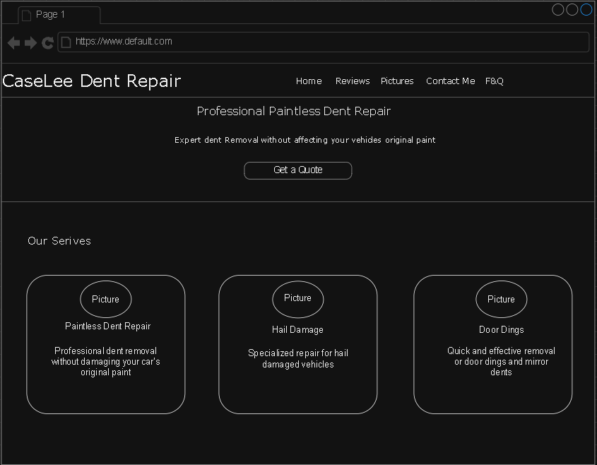
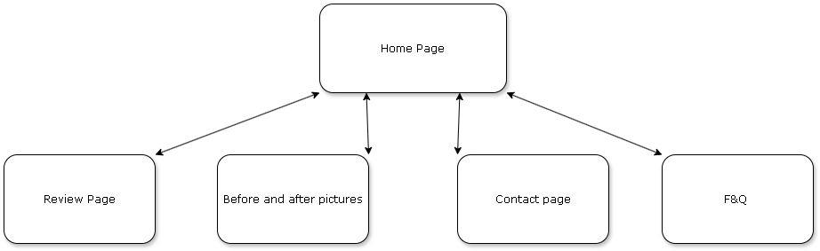

This application will be a website for a clients business. The client fixes small dents in cars and will use the website as a hub to refer clients
to write reviews, read reviews, contact him for quotes, and display pictures of the previous cars and dents he has fixed.
The intended user of this website is his future and current clients.
This website will have content for a home page, a review section, a contact section and form, and pictures of the cars and dents he has fixed.
Client Information
Kevin Stegall
His personal company
email(private)
phone(private)
WireFrame

The wireframe for the home page of the clients website
Site Map

The site map for the client's website
Page Design
Home page
This will be the landing page and the main navigation page for the users.
This is a user page for the user to navigate through the site and
find what they are looking for. It will be a navigation bar with links to other pages.
This is a page for the users to navigate through the site and the get information about the business owner.
Users will not input data here.
No, the users will use this is as a landing page.
There will be navigation buttons.
The navigation bar will switch the page to the desired page.
Reviews
This page will allow new or potential customers to see previous reviews on the site and it will past customers to write a review to the business owner.
This is a user page.
There will be reviews displayed on the website as well as a section for the user to write a review to post.
Yes, the users can write a review to be displayed.
This will require user validation, but I am going to try to make the reviews show and write to a business on google maps. This will require the customer to have a google account.
There will be some sort of link for the user to go to the google maps page.
Api calls to display the data from google reviews, and maybe calls to write a review to google if they allow that- if not a link to write a review on the google business.
This page will require special work and might change based on what I will be able to complete and host using API calls.
Before and After Pictures
To show customers examples of cars Kevin has fixed in the past.
This will be a user page.
This page will have plenty of pictures.
No they will not, there might be a part that are customer pictures where the api calls pictures left on google reviews.
No validation required for this page.
There might be a link to view more customer review pictures, but maybe just navigation back to other pages.
Just navigation buttons, the user will not be able to directly add anything to this page.
I need to find a visually pleasant way to display pairs of pictures and make sure they display nice and are high quality.
Contact Page
This page allows the user to contact Kevin directly.
This will be a user page.
this page will have a form that allows the user to input the details of their car so they can get an estimate.
Yes, they will input data like the make and model of their car as well as pictures or descriptions of data.
The form will likely be sent as an email so the user will need an outside email.
A copy or main button to be able to email Kevin the form and details.
Text and images input and a button to send an email.
Down the line and with more communication with the client will determine if a pdf form or a html form with a specific layout will be best and the form of communication.
F&Q Page
This page will be able to answer questions that customers might have.
This will be a user page.
Facts and questions for the users to look at to learn more or answer any questions they might have.
No they will not, unless my customer wants to make it so customers can ask questions and answer them to create engagement.
No they will not unless my customer wants to add the option above.
There will be some links in some of the facts or answers.
There will not be much more than scrolling to view, maybe navigation in appropriate facts or answers to navigate to the response.
Dynamic Functionality of the website
I will have to use JavaScript in the reviws page. It will be needed to communicate with googles API and make calls to get its info for reviews. I will also probably add
a map feature so the user can see where in charlotte my client is located. I will use javascript in the contact page as well. If I use an html form, I will have to
use javascript to make it into a readable form to send over email. The copy email features or navigate to mail will also need javascript logic. The before and after pictures
might need javascript depedning on how my client wants the pictures displayed, if he wants some sort of overlapping feature it might be needed.